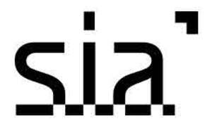

Trade Mark Journal No.2026/001 2 January 2026
UK00004295204 14 November 2025 (9,36,42)

International priority date claimed: 15 May 2025
(United States of America)
(99186958)
- Class 9
- Downloadable computer software platforms for enabling users to electronically mine, exchange, store, send, receive, accept and transmit digital tokens based on blockchain technology; Downloadable software for use in accessing, reading, tracking, and using blockchain technology; Downloadable computer software for facilitating cryptocurrency transactions by creating and encrypting digital tokens based on blockchain technology; Recorded computer software for facilitating cryptocurrency transactions by creating and encrypting digital tokens based on blockchain technology; Downloadable software for use in cloud storage of data; computer software to manage data and databases; computer software for replicating, sharing and synchronizing digital data; cloud servers; computer servers; cloud server software; cloud network monitoring software; cloud computing software; application software for cloud computing services; computer software for uploading and sharing data, documents, files, information, text, photos, images, graphics, music, audio, video, and multimedia content with others via cloud-based web hosting services; computer software for storing data, documents, files, information, text, photos, images, graphics, music, audio, video, and multimedia content for others for use in conjunction with data sharing software via cloud-based web hosting services.
- Class 36
- Charitable foundation services, namely, providing financial support to software developers for research and development in the field of decentralized cloud storage of data.
- Class 42
- Research and development of technology in the field of cloud storage of data; Providing temporary use of non-downloadable web-based decentralized applications (DApps) for cloud storage of data; Providing temporary use of on-line non-downloadable software development tools for cloud storage of data; Design and development of computer software for cloud storage of data; Providing on-line non-downloadable software for facilitating a cryptocurrency transactions by creating and encrypting digital tokens based on blockchain technology; Providing on-line non-downloadable software for enabling users to electronically mine, exchange, store, send, receive, accept and transmit digital tokens based on blockchain technology; Design and development of computer software for peer-to-peer networks using blockchain technology; Developing and updating computer software; Application service provider featuring application programming interface (API) software for providing a platform for the development, testing, and integration of blockchain software applications; Computer services, namely, acting as an application service provider in the field of information management to host computer application software for the purpose of developing, testing, and integrating blockchain applications and software; data recovery services; data encryption services; computerised data storage services; creation of computer programmes for data processing; technical support services, namely, remote and on-site infrastructure management services for monitoring, administration and management of public and private cloud computing and application systems; cloud computing services; consulting services in the field of cloud computing; providing virtual computer systems and virtual computer environments through cloud computing; cloud-based data protection services; design and development of operating software for accessing and using a cloud computing network; software as a service (SaaS) services featuring cloud computing software for electronic storage of data; cloud storage services for electronic data; cloud hosting provider services; programming of operating software for accessing and using a cloud computing network; computer services, namely, provisioning virtual computer systems and virtual computer environments for others and providing computer software maintenance, data encryption, and monitoring; provision of data centre facilities; rental of data centre facilities.
The Sia Foundation, Inc.
Representative: Bristows LLP